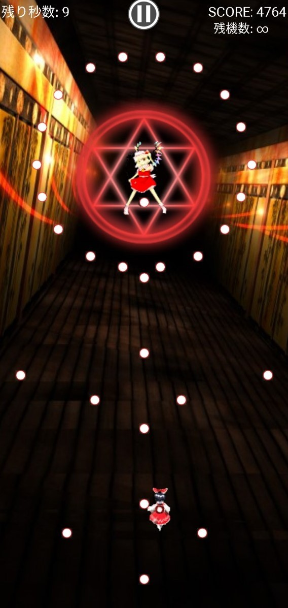
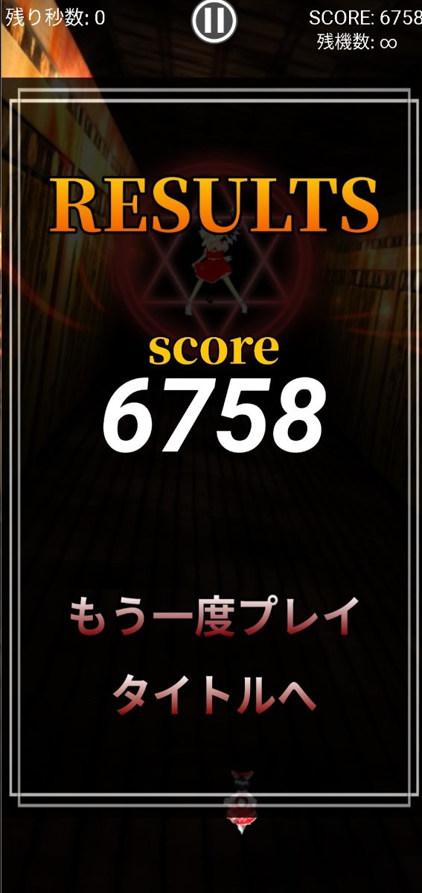
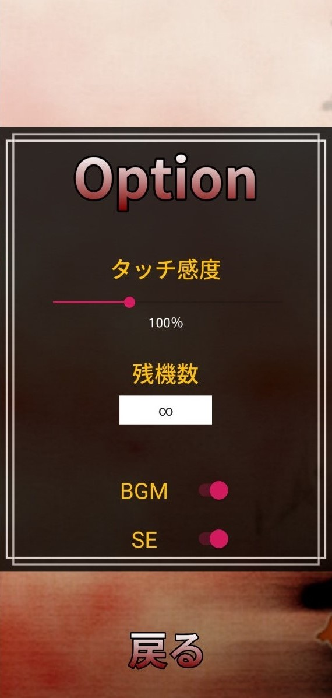

Androidのアプリ開発を勉強するために作った弾幕STGゲーム
top center
某東方風弾幕STG
Java・Android SDKの勉強ついでに作った弾幕ゲームです。
全10種類の弾幕が、15秒経過するごとに切り替わっていきます。
画像やBGM等は全て原作から引っ張ってきたため、Playストア上での公開はしておりません。



リンク
使用技術
- 言語・・・Java
- フレームワーク、ライブラリ・・・Android SDK
- ツール・・・GitHub, Android Studio
- OS・・・Windows
制作期間